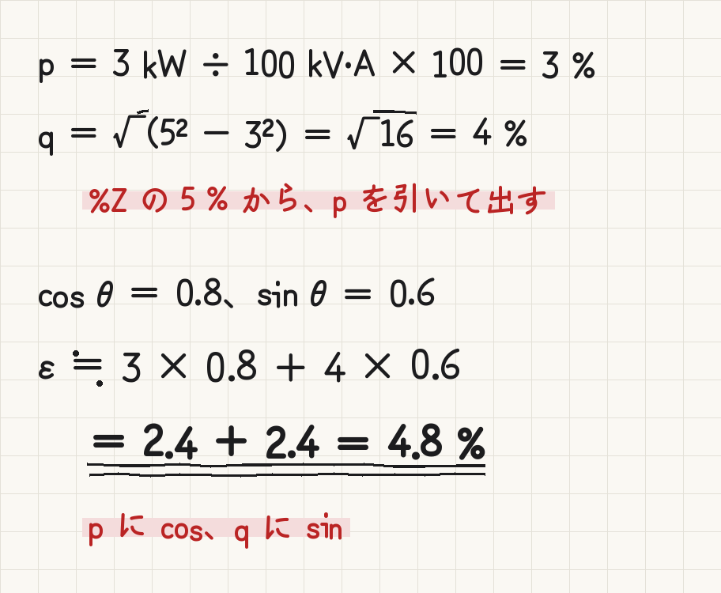

電圧変動率の求め方：p cos θ ＋ q sin θ の p と q は何か
三相と変圧器の全体像 9章のうち、このページは ⑥ 電圧変動率
電圧変動率の式は、ε ≒ p cos θ ＋ q sin θ と1行で示されます。ところが、問題文に p と q がそのまま書かれていないと、何を入れればよいかで手が止まります。
どこで止まるか
電圧変動率とは
電圧変動率は、全負荷から無負荷にしたとき、二次の電圧がどれだけ上がるかの割合です。
電圧が変わるのは、巻線の抵抗とリアクタンスで、電圧が下がるからです。その下がり方を、定格の電圧に対する割合で表した物が p と q です。
p と q の出し方
p は、抵抗による電圧の降下の割合です。抵抗の電圧と電流を掛けると銅損になるので、全負荷の銅損から出せます。
p ＝ 全負荷の電流 × 全負荷の電流 × 抵抗 ÷（定格の電圧 × 全負荷の電流）× 100
p ＝ 全負荷の銅損 ÷ 容量 × 100〔%〕
q は、リアクタンスによる電圧の降下の割合です。%Z は、p と q を直角に合わせた大きさなので、%Z と p が分かれば q が出ます。
q ＝ √(%Z² − p²)
なぜ p に cos θ、q に sin θ か
抵抗による降下は、電流と同じ向きです。リアクタンスによる降下は、電流から 90° 進んだ向きです。遅れ力率では、電流が電圧から θ だけ遅れています。
電圧の向きに数えると、抵抗の分は cos θ 倍、リアクタンスの分は sin θ 倍だけ効きます。足すと p cos θ ＋ q sin θ になります（cos と sin が辺の割合であることは、cos60° の値は 1/2の頁で確かめられます）。電圧の向きと直角な分は小さいので省きます。このため「≒」で書きます。
力率が 1 なら sin θ ＝ 0 なので、ε ≒ p です。
数値で確かめる
容量 100 kV·A、全負荷の銅損 3 kW、%Z ＝ 5%、二次の定格電圧 200 V の変圧器を、遅れ力率 0.8 で使います。
q ＝ √(5² − 3²) ＝ √(25 − 9) ＝ √16 ＝ 4%
cos θ ＝ 0.8、sin θ ＝ √(1 − 0.8²) ＝ 0.6
ε ≒ 3 × 0.8 ＋ 4 × 0.6 ＝ 2.4 ＋ 2.4 ＝ 4.8%
無負荷にしたときの二次電圧は、200 × (1 ＋ 0.048) ＝ 209.6 V です。
確かめ：遅れ力率の電圧変動率は、%Z（5%）を超えません。5% より大きな答えが出たら、cos θ と sin θ を入れ替えていないか見直します。

電圧変動率の式のまとめ
遅れ力率：ε ≒ p cos θ ＋ q sin θ〔%〕
p ＝ 全負荷の銅損 ÷ 容量 × 100、q ＝ √(%Z² − p²)
別の呼び方：p は百分率抵抗降下・%r、q は百分率リアクタンス降下・%x と書かれます。ε ≒ p cos θ ＋ q sin θ は、電圧変動率の近似式・簡易式とも呼ばれます。
p ＝ 3%、q ＝ 4%、遅れ力率 0.8 なら 4.8%、力率 1 なら 3% です。
百分率抵抗降下 1%、百分率リアクタンス降下 5% の変圧器を、遅れ力率 0.8 で使います。電圧変動率はおよそ何 % ですか。
答え
sin θ ＝ 0.6。ε ≒ 1 × 0.8 ＋ 5 × 0.6 ＝ 0.8 ＋ 3.0 ＝ 3.8%。この計算を順を追って解く本：第5巻の案内
最終更新：2026年11月17日